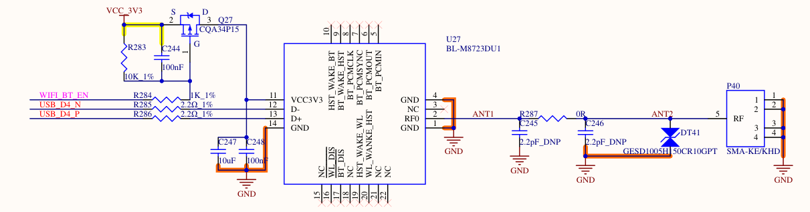

OK3588 Linux 5.10.209 Buildroot RTL8723DU Module Adaptation
Document classification: □ Top secret □ Secret □ Internal information ■ Open
Copyright
The copyright of this manual belongs to Baoding Folinx Embedded Technology Co., Ltd. Without the written permission of our company, no organizations or individuals have the right to copy, distribute, or reproduce any part of this manual in any form, and violators will be held legally responsible.
Forlinx adheres to copyrights of all graphics and texts used in all publications in original or license-free forms.
The drivers and utilities used for the components are subject to the copyrights of the respective manufacturers. The license conditions of the respective manufacturer are to be adhered to. Related license expenses for the operating system and applications should be calculated/declared separately by the related party or its representatives.
RTL8723DU Module Adaptation
This document describes how to adapt the RTL8723DU Wi-Fi/Bluetooth module on OK3588 with Linux kernel 5.10.209 and Buildroot.
Revision History
Date |
Version |
Revision History |
|---|---|---|
12/30/2024 |
V1.0 |
Initial Version |
1. Hardware Schematic

2. Software Configuration
This guide is based on a specific SDK version. Refer to the provided patch files for modifications. General steps are outlined below.
OK3588-C_Linux5.10.209+Qt5.15.10_用户资料_R1Add the RTL8723DU driver source code to the kernel directory.
Please ask your sales representative to get the related materials.
Add the wifi bluetooth driver.
The driver is added to the source code. Finally, the kernel image needs to be compiled to get the driver module. The usage of the driver module will be described later. There are two ways to add the driver, which can be selected according to the specific usage scenario.
If your SDK version matches the one this guide is based on and you have not made any custom modifications to the kernel driver configuration, you can directly place the provided driver patch file into the kernel directory of the SDK and apply it using the command below. This method automatically integrates the driver without requiring manual configuration changes.
Add directly through patch, put the patch under the source code directory, and execute the following command
patch -p1 < OK3588_linux5.10.209_8723du_add-driver-and-configurations.patch
If a different SDK version is used or prior modifications have been made to configuration files such as defconfig or Makefile, it is recommended to open the provided patch file and manually apply the changes to the source code. Afterward, rebuild the image by following the user compilation manual and flash it onto the development board.
Put
rtl8723du packagein thedriver\wifi source codetoOK3588-linux-source/kernel/drivers/net/wireless/;Put the driver file in
driver\bluetooth driver source codetoOK3588-linux-source/kernel/drivers/bluetooth/Modify the related kernel configuration files according to
OK3588_linux5.10.209_8723du_add-configurations.patch.
Enable Pin Configuration
Note: The device tree configuration provided serves only as a reference. In practice, GPIO selection and configuration must be handled based on the actual wiring shown in the hardware schematic.
There are three approaches to configuring the enable pin:
1. Configure via Device Tree:
Define the enable pin directly in the device tree, resolve any pin conflicts, and set the enable state. Then compile and flash the updated device tree.
2. Control via SysFS (Filesystem):
First, check the device tree for pin conflicts and ensure the target pin is not multiplexed for other functions (unused pins default to GPIO). Then export and configure the GPIO through the filesystem at runtime.
3. Hardware Modification (Bypass Enable Pin):
Avoid software control altogether by modifying the schematic to supply 3.3V directly to the module, eliminating the need for an enable pin.
① A power enable pin for the RTL8723DU module is reserved on the schematic. Corresponding modifications must be made in the device tree to add the enable pin configuration. For reference, you may consult the OK3588_linux5.10.209_8723du-WIFI_BT_EN.patch file.
The schematic designates the pin RK_PD3 for WIFI_BT_EN. However, this pin is originally configured as a touch chip interrupt pin for the MIPI_DSI interface. Configuring it as WIFI_BT_EN would cause a conflict. Therefore, you must remove the conflicting function definition from the device tree and add the WIFI_BT_EN configuration.
The patch file contains two main modifications:
In
FET3588-C.dtsi: The configuration for theWIFI_BT_ENenable function is added. Since the enable pin is active-low in the schematic (the MOSFET turns on, supplying 3.3V toVCC3V3when the pin outputs low), thepinctrlconfiguration sets the default state to pull low.In
OK3588-C-common.dtsi: The original, conflicting pin configuration section is removed.
If you prefer not to configure the WIFI_BT_EN pin in the device tree and instead wish to control the GPIO directly via the filesystem to power the module on/off, you must first resolve any pin multiplexing conflicts in the device tree. Refer to the modifications in OK3588-C-common.dtsi to remove the conflicting GPIO multiplexing settings in the device tree.
Use scripts to export GPIO sysfs nodes and set levels
Relevant scripts are stored in the gpio script folder. Use
fltest_gpio.shfor the CPU’s native IO pins, andfltest_extgpio.shfor GPIOs on the OK3588 baseboard’s IO expansion chip. Here, we take the CPU IO pinRK_PD3as an example.
fltest_gpio.sh GPIO3_D3 1 # Set the GPIO pin to high level
fltest_gpio.sh GPIO3_D3 0 # Set the GPIO pin to low level
Manually execute commands to export GPIO nodes, including node calculation and configuration methods. Here, using the CPU’s IO pin
RK_PD3as an example:Calculation method for GPIO sysfs nodes (A=0, B=1, C=2, D=3… and so on):
3 RK_PD3
32*3+8*3+3 = 123
Export the node and configure its level:
echo 123 > /sys/class/gpio/export
cd /sys/class/gpio/gpio123
cat value
echo out > direction
echo 1 > value
echo 0 > value
If enabling the module via a control pin is not required, the schematic can be modified to supply power directly to the RTL8723DU module. In this case, no enable pin control configuration is needed in the device tree.
Adding Firmware to the Filesystem
The Bluetooth driver requires firmware to load. The firmware file must be placed in the development board’s filesystem under the /lib/firmware/ directory. This step can be skipped if Bluetooth functionality is not needed.
/lib/firmware/rtl8723du_config
/lib/firmware/rtl8723du_fw
Loading Driver Modules
Since Realtek modules typically use proprietary drivers that cannot be integrated into the kernel, they are compiled as loadable modules.** After compilation, the driver modules are generated in the following locations:
OK3588-linux-source/kernel/drivers/net/wireless/8723du.ko
OK3588-linux-source/kernel/drivers/bluetooth/rtk_btusb.ko
Typically, the driver modules can be loaded manually. Simply transfer the compiled Wi-Fi and Bluetooth driver files to the development board (using methods such as SSH, ADB, USB drive, or TF card), then execute the commands to load the drivers.
insmod 8723du.ko
insmod rtk_btusb.ko
If you need the drivers to load automatically on boot, you can place them in a designated location and add the loading commands to the startup Wi-Fi/Bluetooth initialization script. Modify the
S36wifibt-init.shfile as shown below, and place the relevant modules in the specified directory (create the directory if it does not exist). This will ensure the drivers are loaded automatically during system startup.
/etc/init.d/S36wifibt-init.sh
/lib/modules/5.10.209/kernel/drivers/net/wireless/rtl8723du/8723du.ko
/lib/modules/5.10.209/kernel/drivers/bluetooth/rtk_btusb.ko
#!/bin/sh
### BEGIN INIT INFO
# Provides: wifibt-init
# Required-Start: $local_fs $syslog
# Required-Stop: $local_fs
# Default-Start: S
# Default-Stop: K
# Description: Init Rockchip Wifi/BT
### END INIT INFO
case "$1" in
start|stop|restart)
insmod /lib/modules/5.10.209/kernel/drivers/net/wireless/rtl8723du/8723du.ko
insmod /lib/modules/5.10.209/kernel/drivers/bluetooth/rtk_btusb.ko
/usr/bin/wifibt-init.sh $1
;;
*)
echo "Usage: [start|stop|restart]" >&2
exit 3
;;
esac
:
After the drivers are loaded successfully, you can see the device nodes. If they do not appear, it may indicate an issue.
View wifi node.
root@ok3588-buildroot:/# ifconfig wlan0
wlan0 Link encap:Ethernet HWaddr 38:7A:CC:70:86:F6
BROADCAST MULTICAST MTU:1500 Metric:1
RX packets:0 errors:0 dropped:0 overruns:0 frame:0
TX packets:0 errors:0 dropped:0 overruns:0 carrier:0
collisions:0 txqueuelen:1000
RX bytes:0 (0.0 B) TX bytes:0 (0.0 B)
Bluetooth node.
root@ok3588-buildroot:/# hciconfig -a
hci0: Type: Primary Bus: USB
BD Address: 38:7A:CC:70:86:F7 ACL MTU: 1021:8 SCO MTU: 255:12
UP RUNNING PSCAN
RX bytes:729 acl:0 sco:0 events:54 errors:0
TX bytes:3187 acl:0 sco:0 commands:54 errors:0
Features: 0xff 0xff 0xff 0xfa 0xdb 0xbd 0x7b 0x87
Packet type: DM1 DM3 DM5 DH1 DH3 DH5 HV1 HV2 HV3
Link policy: RSWITCH HOLD SNIFF PARK
Link mode: PERIPHERAL ACCEPT
Name: 'BlueZ 5.72'
Class: 0x6c0000
Service Classes: Rendering, Capturing, Audio, Telephony
Device Class: Miscellaneous,
HCI Version: 4.1 (0x7) Revision: 0x92b7
LMP Version: 4.1 (0x7) Subversion: 0x6f71
Manufacturer: Realtek Semiconductor Corporation (93)
Modifying the Root Filesystem in the SDK
After verifying that the compiled driver modules and firmware are functioning correctly as described previously, you can proceed to create an update.img for future flashing.
Once the Buildroot source code compilation is complete, the root filesystem image is located at:
OK3588-linux-source/prebuilts/forlinx/buildroot/rootfs.ext4, mount this filesystem image in your development environment, then copy the firmware and compiled modules to their respective target directories. Make the necessary modifications to the relevant files, unmount the filesystem, and recompile the update.img. The modifications will be reflected in the root filesystem once the newly compiled update.img is flashed.
Testing
Refer to the relevant sections of the user manual for testing instructions.